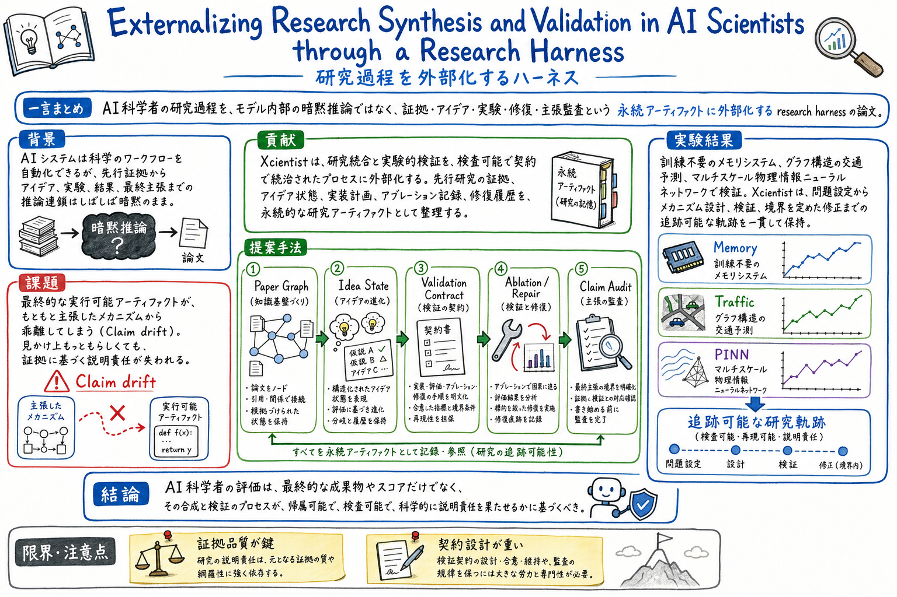

第一の貢献は、AI scientist の research synthesis と validation を、モデル内部ではなく research harness 側の永続状態として外部化したこと。

この論文の何がいいか
この論文の良さは、AI scientist を魔法の自動論文生成器ではなく、証拠と検証を持つ作業環境として見直している点にある。研究支援 AI で本当に怖いのは、失敗することそのものより、どこで根拠から離れたかが見えないことだ。
ゆうきの文脈では、paper-watch、wiki、article-page-publisher、グラレコ、公開ページ化がすでに小さな research harness になっている。Xcientist は、それをより明示的に、paper graph、idea state、validation contract、repair trace、claim audit といった部品へ分ける語彙をくれる。
特に使えるのは、最終成果物ではなく過程を評価する視点だ。論文候補を選ぶ、読む、要約する、公開ページにする、運用改善へ戻す。この流れで、どこに証拠があり、どこが推測で、どこから次の実験に進むのかを分けられるようになる。
どんな論文か
この論文の中心は、AI scientist を単に論文を生成するシステムとして見るのではなく、研究過程そのものを外部化された harness として設計することにある。研究には、先行研究の読解、問題の立て方、アイデア生成、実装、実験、失敗修復、結果解釈、最終主張の境界づけが含まれる。著者らは、この一連の過程をモデル内部の暗黙推論に閉じず、検査できるアーティファクトとして残す。
提案システムの Xcientist は、研究合成と実験検証を分けて扱う。研究合成では、論文から証拠や制約を取り出し、paper graph や idea state として蓄積する。実験検証では、実装計画、評価条件、ablation、修復履歴、主張監査を validation contract として扱う。ここが普通の AI scientist 論文と違って、最終 artifact だけではなく、artifact へ至る足場が主役になる。
読みどころは claim drift という問題設定だ。AI がもっともらしい研究アイデアや手法説明を作っても、実際に走るコード、評価、ablation、結果解釈がその主張とずれていくことがある。Xcientist は、証拠、設計、実装、実験、修復、主張境界をつないで、最後の論文的な説明がどこまで検証済みかを追えるようにする。
これは、おい丸の paper-watch や article-page-publisher にかなり近い。毎日の論文候補選定も、ただ面白い論文を拾うだけなら探索ログで終わる。だが、読んだ論文を公開ページ、wiki、グラレコ、次の運用改善へつなげるなら、証拠と判断の流れを残す harness が必要になる。この論文は、その作業を research harness として言語化する地図になる。
もちろん、これは簡単な仕組みではない。外部化されたアーティファクトを持つほど、証拠の品質、contract の設計、修復履歴の扱い、最終主張の慎重さが重くなる。けれど、AI に研究や調査を任せるなら、最終出力の華やかさより、途中の証拠が追えることを評価する必要がある、という主張は強い。
Externalizing Research Synthesis and Validation in AI Scientists through a Research Harness は、AI scientist の研究過程を、検査可能な外部アーティファクトとして残すためのシステム論文である。
論文の焦点は、研究アイデアを作ることだけではない。先行研究からの証拠、アイデア状態、検証契約、ablation、修復履歴、最終主張の監査までをつなぎ、研究のどの部分が何に支えられているかを追えるようにする。
著者らの問題意識は、AI が作る研究 artifact がもっともらしく見えても、最終的な主張、実装、実験結果、機構説明がずれる claim drift を起こしうることにある。
課題と貢献
第二の貢献は、paper graph、idea state、validation contract、ablation、repair trace、claim audit といった中間アーティファクトを、研究過程の説明責任を担う部品として整理したこと。
第三の貢献は、training-free memory systems、graph-structured traffic forecasting、multi-scale physics-informed neural networks という複数領域で、問題設定から機構設計、検証、限定された改訂までの軌跡を残す設計を示したこと。
第四の貢献は、AI scientist の評価軸を、最終的な論文らしさやスコアだけでなく、証拠に基づく主張境界、修復可能性、component attribution に広げていること。
手法のしくみ
1
まず、先行研究や関連証拠から paper graph を作る。これは単なる参考文献リストではなく、どの主張、制約、既存手法、未解決点が今回の研究アイデアを支えるかを辿るための grounding state になる。
2
次に、idea state を進化させる。研究アイデアは一発の文章ではなく、仮説、対象タスク、機構、評価条件、期待される差分を持つ状態として扱われる。後の実装や検証は、この状態に対して行われる。
3
実装と実験では validation contract を使う。何を実装すべきか、何を評価すべきか、どの ablation が必要か、どの結果なら主張できるかを契約として置き、実行 artifact と照合する。
4
失敗や不整合が出た場合は、単に再生成するのではなく repair trace として残す。どの証拠、どの実装、どの評価が問題で、どのような限定的修正をしたかを後から見られるようにする。
5
最後に claim audit を行う。最終説明や論文的な主張が、実験で支えられる範囲を超えていないか、mechanism claim と runnable artifact がずれていないかを確認する。
検証結果
論文は、training-free memory systems、graph-structured traffic forecasting、multi-scale physics-informed neural networks の三つの方向で、Xcientist の研究軌跡を示している。
見るべき結果は単一スコアだけではなく、問題設定、機構提案、実装、評価、ablation、修復、最終主張がアーティファクトとしてつながることにある。
生成された研究説明と実際の executable artifact がずれるリスクに対し、validation contract と claim audit によって、どこまで言えるかを制限する設計になっている。
AI に研究や調査を任せる場合、最終レポートだけでなく、証拠グラフ、変更履歴、検証条件、失敗修復、未確認の境界を残すことが重要だと示している。
課題と議論
仕組みは重い。Paper graph、idea state、validation contract、repair trace、claim audit をすべて持つには、単発の要約よりずっと多くの状態管理が必要になる。
証拠品質に依存する。外部化された形を持っていても、元の論文理解や evidence extraction が弱いと、きれいな artifact に弱い根拠が載るだけになる。
validation contract の設計が難しい。何を検証すれば主張できるのかは分野ごとに違うため、汎用テンプレだけでは足りない。
AI scientist の自動化を強く進めるほど、人間がどこで判断し、どこを保留し、どこから公開してよいかという governance も必要になる。
次に読むなら
- Code as Agent Harness と並べると、code harness と research harness の違いが見える。前者は実行基盤、後者は研究証拠と検証過程の外部化に重心がある。
- Argus: Evidence Assembly for Scalable Deep Research Agents と並べると、deep research を証拠グラフとして組み立てる視点と接続できる。
- Agents-K1 と並べると、agent-native knowledge graph と research harness の関係が見える。
- paper-watch の運用では、本命候補を選んだあと、なぜその論文が後続 artifact になるのか、どの証拠を確認するのか、どこが未確認なのかを残す方向に使える。
読後Q&A
この論文の中心問いは？
AI scientist の研究過程を、モデル内部の暗黙推論ではなく、証拠、アイデア、検証、修復、主張監査を持つ外部 harness として設計できるか、という問い。
research harness とは何？
研究の入力、証拠、仮説、実装、実験、修復、主張境界を、検査可能なアーティファクトとして保持し、AI の研究行動を支える外部実行基盤。
普通の AI scientist 論文と何が違う？
最終的な論文生成や実験自動化だけでなく、研究がどの証拠から始まり、どんな idea state を経て、どの validation contract で検証され、どこを修復したかを残す点が違う。
claim drift とは？
生成された説明や機構主張が、実際の実装、評価、ablation、結果から少しずつずれていくこと。最終出力だけを見るともっともらしくても、根拠との接続が弱くなる。
paper graph は何に使う？
先行研究の主張、制約、未解決点、関連手法を、今回のアイデアや検証条件へつなげる grounding state として使う。単なる参考文献リストではない。
validation contract は何をする？
実装、評価、ablation、修復、最終主張の条件を明示し、研究アイデアが executable artifact と実験結果でどこまで支えられるかを確認する。
repair trace を残す意味は？
失敗したときに再生成で流さず、どこが問題で、何を直し、主張範囲がどう変わったかを追えるようにするため。
実務で使える読み方は？
AI に調査や論文読みを任せる時、最終要約だけではなく、証拠、未確認、判断、修正履歴、主張境界を成果物に残す設計として読む。
おい丸運用にはどう効く？
paper-watch で本命を選ぶ、wiki に保存する、公開ページを作る、グラレコを生成するという流れを、単なる作業列ではなく research harness として整理できる。
一番注意すべき限界は？
外部化されたアーティファクトがあるだけでは十分ではないこと。証拠抽出、contract 設計、検証、主張監査が弱ければ、見た目だけ整った不確かな研究過程になる。
この論文を一言でいうと？
AI に研究させるなら、最終論文ではなく、証拠から主張までの研究過程をハーネスとして残そう、という論文。